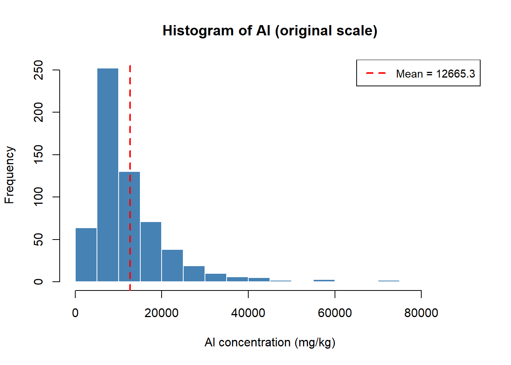
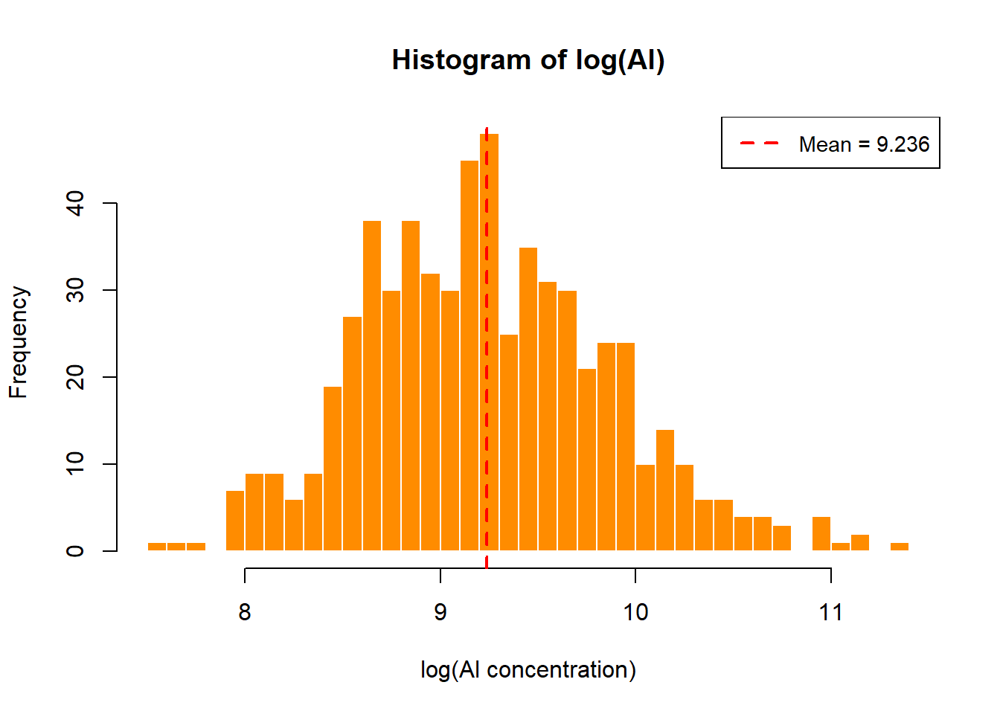
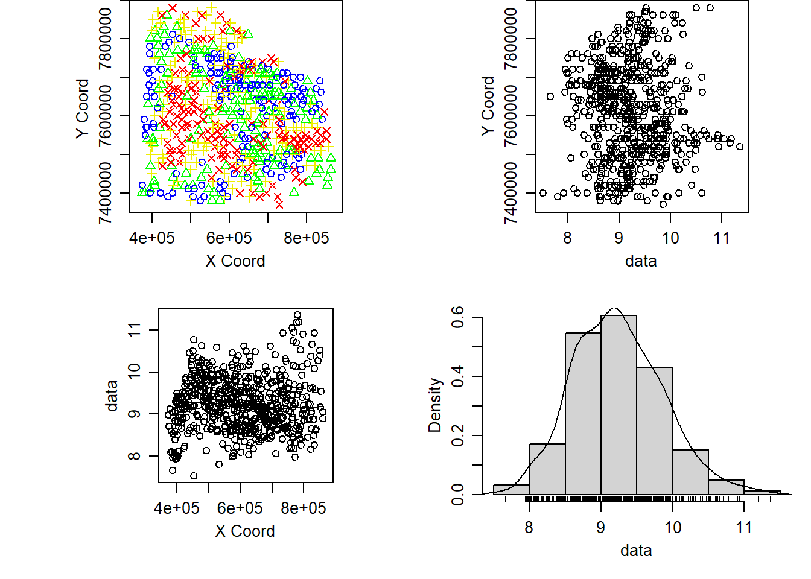
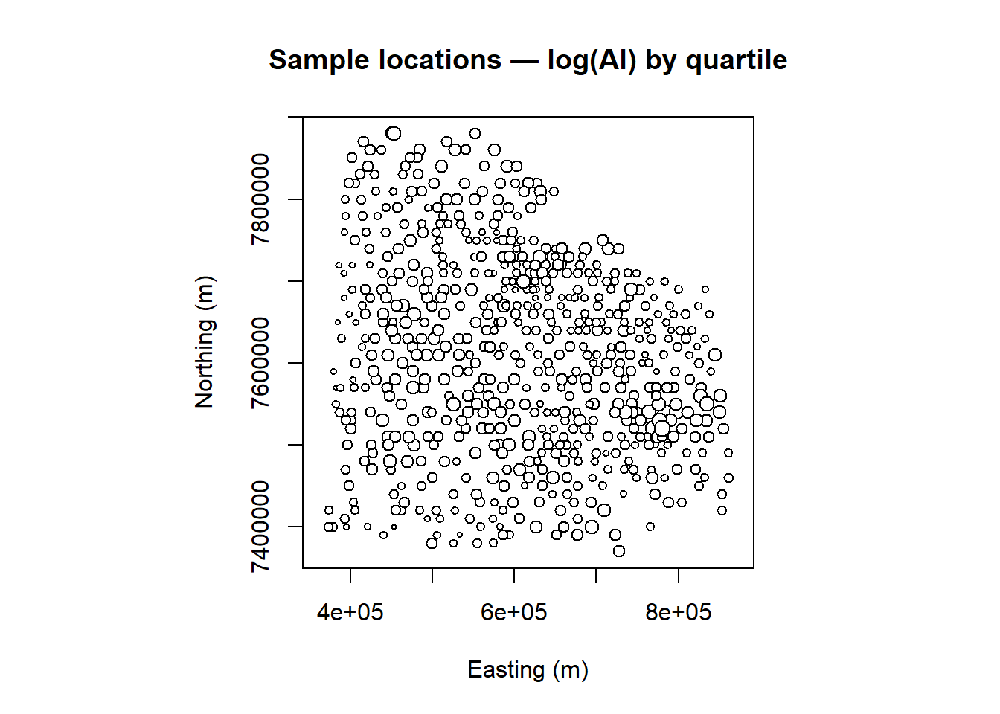
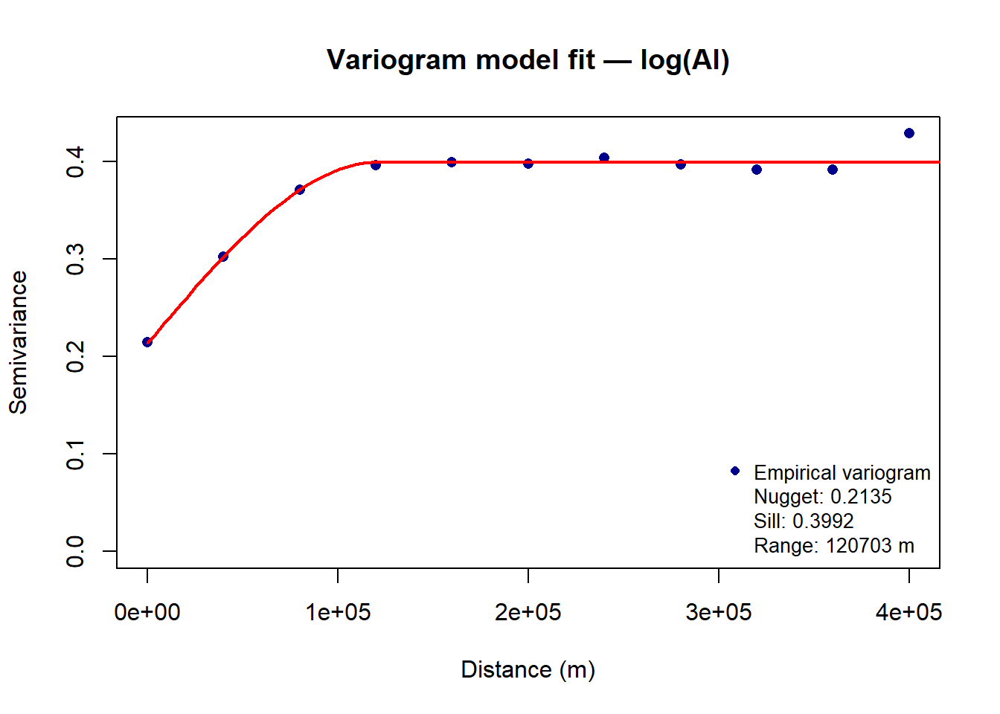
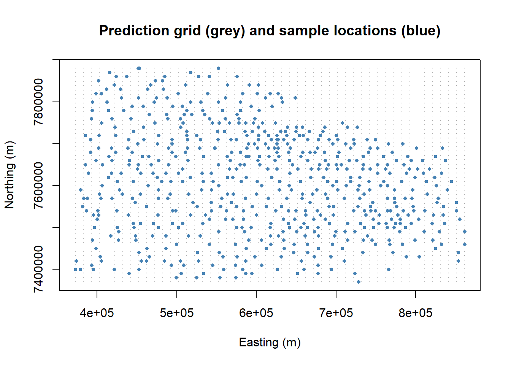
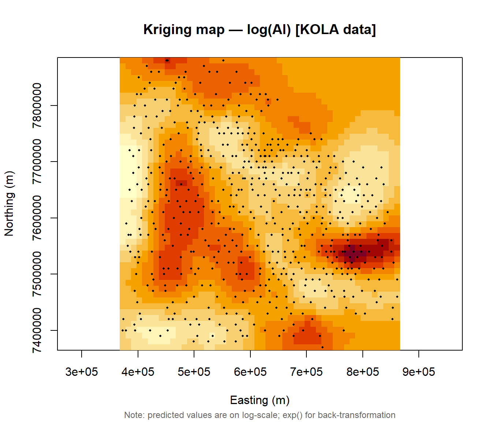
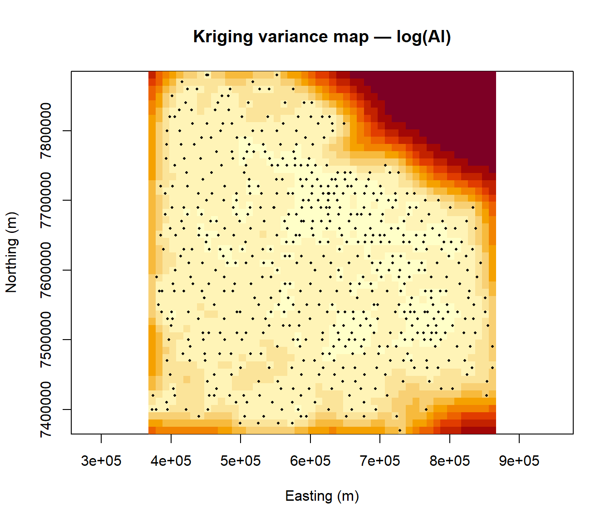
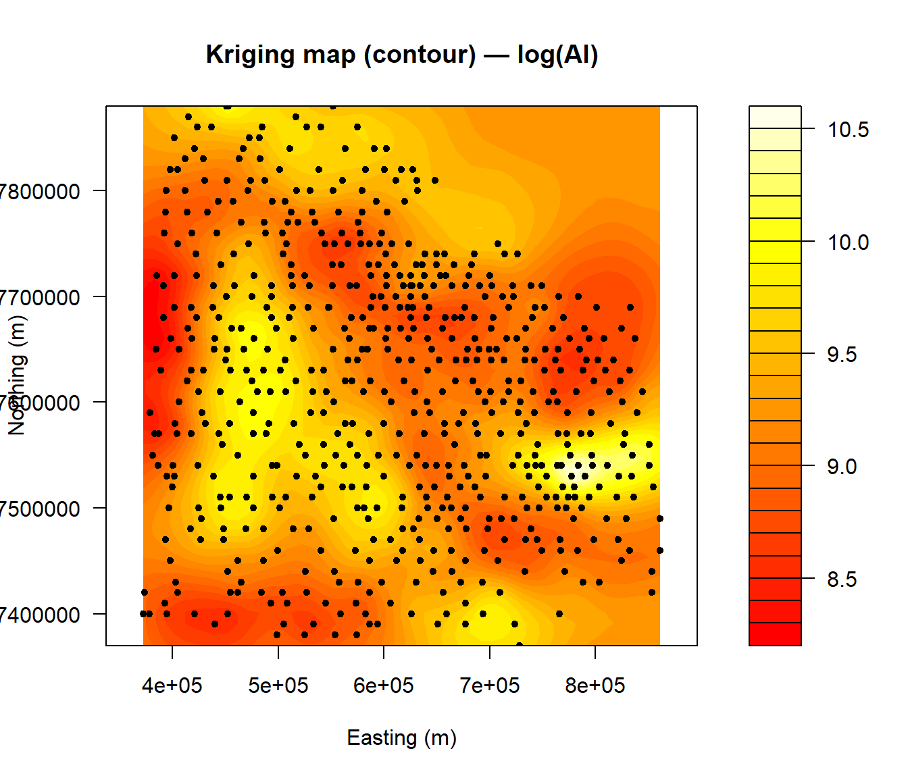
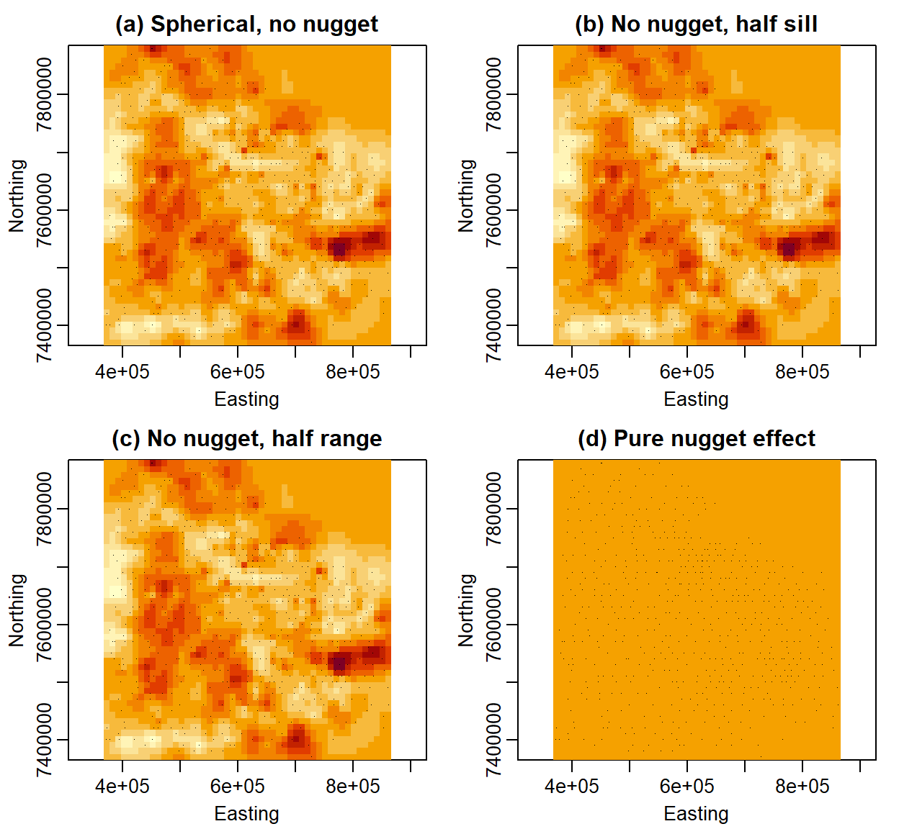

Group Exercise: Geostatistical Analysis of Aluminium (Al) in the KOLA Data Set
VU Environmental Statistics SS2026 — Group 2 Homework
Author
Lehmann Leon, Hovhannisyan Norayr, Strachinaru Andrei
Published
April 7, 2026
Introduction
This report presents a geostatistical analysis of the element Aluminium (Al) from the KOLA-95 geochemical data set (KOLA95_Chor.txt). The data originate from a systematic sampling campaign across the Kola Peninsula (Russia/Finland/Norway) and contain concentrations of numerous chemical elements in O-horizon (organic) soil samples.
The analysis follows these steps:
Data import
Explorative statistics — choosing a data transformation
Spatial plot of Al values
Variogram cloud and empirical variogram
Fitting a theoretical variogram model
Spatial prediction (kriging) and mapping
Voluntary: sensitivity of the kriging map to the variogram model
Data Import
# Load the geoR package, which provides all geostatistical tools used below.# install.packages("geoR") # run once if not yet installedlibrary(geoR)# Read the KOLA data from a tab-separated text file with a header row.# The file must be in the same directory as this Rmd file.KOLA95 <-read.table("KOLA95_Chor.txt",sep ="\t", # columns are separated by tabsheader =TRUE# first row contains column names)# Identify the column index of "Al" to use in as.geodata()al_col <-which(names(KOLA95) =="Al")cat("Column index of Al:", al_col, "\n")
Column index of Al: 11
cat("Total number of samples:", nrow(KOLA95), "\n")
Total number of samples: 606
# Convert the data frame to a geoR "geodata" object.# coords.col = 2:3 uses columns XCOO and YCOO as spatial coordinates (UTM metres).# data.col = al_col selects the Al column as the target variable.s100 <-as.geodata( KOLA95,coords.col =2:3, # XCOO (col 2) and YCOO (col 3)data.col = al_col # Al concentrations (single column — no data.names needed))
as.geodata: 1 points removed due to NA in the data
# Quick summary of the geodata object: spatial extent + data statisticssummary(s100)
Number of data points: 605
Coordinates summary
XCOO YCOO
min 372602 7370000
max 861309 7880000
Distance summary
min max
529 627686
Data summary
Min. 1st Qu. Median Mean 3rd Qu. Max.
1840 6460 9910 12665 15500 85900
The summary shows the spatial extent of the sampling grid and a first overview of Al concentrations. Note the large range between minimum and maximum, which is a first hint that a log-transformation may be appropriate.
Explorative Statistics — Choosing a Transformation
Before computing variograms we check whether the data are approximately symmetric (Gaussian), as classical kriging assumes normality. We compare the histogram of the original values with that of the log-transformed values.
# Histogram of the raw Al concentrationshist( s100$data,breaks =30,main ="Histogram of Al (original scale)",xlab ="Al concentration (mg/kg)",col ="steelblue",border ="white")# Add a vertical line at the mean to illustrate the skewnessabline(v =mean(s100$data), col ="red", lwd =2, lty =2)legend("topright", legend =paste("Mean =", round(mean(s100$data), 1)),col ="red", lty =2, lwd =2, cex =0.9)

Histogram of original Al concentrations. Strong right-skew suggests a log-transformation is advisable.
# Log-transform the Al values and inspect the resulting distributionhist(log(s100$data),breaks =30,main ="Histogram of log(Al)",xlab ="log(Al concentration)",col ="darkorange",border ="white")abline(v =mean(log(s100$data)), col ="red", lwd =2, lty =2)legend("topright", legend =paste("Mean =", round(mean(log(s100$data)), 3)),col ="red", lty =2, lwd =2, cex =0.9)

Histogram of log-transformed Al concentrations. The distribution is much more symmetric, justifying the log-transformation.
# Decision: the log-transformed values are approximately symmetric (bell-shaped),# while the original values are strongly right-skewed.# --> We apply the log-transformation before geostatistical modelling.s100$data <-log(s100$data)# Verify the transformation was applied correctlycat("Summary of log(Al):\n")
Summary of log(Al):
print(summary(s100$data))
Min. 1st Qu. Median Mean 3rd Qu. Max.
7.52 8.77 9.20 9.24 9.65 11.36
Interpretation: The original Al concentrations are strongly right-skewed (long upper tail), which would violate the normality assumption of ordinary kriging. After log-transformation the histogram is approximately bell-shaped, making the data suitable for geostatistical analysis. All further steps are performed on log(Al).
Spatial Plot of Al Values
We plot the sample locations coloured by their log(Al) value to get a first impression of the spatial structure (e.g. spatial gradients, clusters of high/low values).
# plot.geodata() produces a 4-panel plot:# top-left: data vs X-coordinate; top-right: data locations (coloured by quartile);# bottom-left: data locations; bottom-right: data vs Y-coordinate.plot(s100,lowess =TRUE# adds a smooth lowess trend line to the marginal plots)

Sample locations coloured by log(Al) quartile. Blue: low; Green: medium-low; Yellow: medium-high; Red: high concentrations. A spatial gradient is visible from NW (lower values) to SE (higher values).
# A cleaner map showing only the spatial locations coloured by quartilepoints(s100,xlab ="Easting (m)",ylab ="Northing (m)",main ="Sample locations — log(Al) by quartile")

Spatial distribution of log(Al) values. Symbol size and colour reflect the quartile class (blue=Q1, green=Q2, yellow=Q3, red=Q4).
Interpretation: The plot reveals a broad-scale spatial structure: samples in the south-eastern part of the study area tend to have higher Al concentrations (red/yellow symbols), while north-western samples show lower values (blue/green). This spatial pattern motivates a formal variogram analysis to quantify the spatial autocorrelation.
Empirical Variogram Analysis
Variogram Cloud
The variogram cloud plots the squared difference of all sample pairs \(\frac{1}{2}[z(x_i) - z(x_j)]^2\) against their separation distance \(h\). It gives an initial impression of spatial variability and helps detect outliers.
# Compute and plot the omnidirectional variogram cloud.# max.dist = 400000 m (400 km) — covers roughly 2/3 of the study area's extent,# which is a common rule of thumb to avoid unreliable estimates at large lags.cloud1 <-variog(s100, option ="cloud", max.dist =400000)
Variogram cloud of log(Al). Each point represents one sample pair. The increasing trend with distance indicates positive spatial autocorrelation.
Interpretation: The variogram cloud shows an increasing trend in semivariance with distance, which confirms positive spatial autocorrelation — nearby locations tend to have more similar Al concentrations than distant ones. The scatter is large, as expected for a cloud, but the upward trend is clear.
Empirical (Binned) Variogram
We bin the pairs by distance to obtain a more readable experimental variogram.
# Bin the variogram into 10 equal-width lag classes from 0 to 400,000 m.# uvec defines the bin boundaries; l=11 creates 10 intervals.bin1 <-variog(s100, uvec =seq(0, 400000, l =11))
Experimental (binned) variogram of log(Al) with 10 lag classes up to 400 km. The semivariance increases and then levels off, indicating the range of spatial dependence.
Interpretation: The empirical variogram rises from a non-zero intercept at short distances (a nugget effect), increases up to roughly 200,000–300,000 m, and then appears to level off at a sill. This behaviour is consistent with a nested model comprising a nugget effect and a bounded variogram (e.g. spherical model).
Fitting a Theoretical Variogram Model
We fit a nested variogram model consisting of:
a nugget effect\(\tau^2\) (pure measurement error / micro-scale variability)
a spherical variogram component with sill \(\sigma^2\) and range \(\phi\)
where \(\text{Sph}(h;\,\phi) = \frac{3h}{2\phi} - \frac{1}{2}\left(\frac{h}{\phi}\right)^3\) for \(0 < h \le \phi\), and \(1\) for \(h > \phi\).
# Fit a nested nugget + spherical model to the empirical variogram.# ini.cov.pars: initial values for c(sill sigma^2, range phi); nugget = tau^2 start# weights = "npairs": weight each lag class by the number of pairs (more robust)vfit <-variofit( bin1,cov.model ="spherical",ini.cov.pars =c(0.15, 250000), # initial sill and rangenugget =0.05, # initial nuggetweights ="npairs")
variofit: covariance model used is spherical
variofit: weights used: npairs
variofit: minimisation function used: optim
# Print the fitted parametersprint(vfit)
variofit: model parameters estimated by WLS (weighted least squares):
covariance model is: spherical
parameter estimates:
tausq sigmasq phi
2.130e-01 1.860e-01 1.207e+05
Practical Range with cor=0.05 for asymptotic range: 120703
variofit: minimised weighted sum of squares = 9.887
# Extract and report the key variogram parametersnugget <- vfit$nuggetsill <- vfit$cov.pars[1] # partial sill (sigma^2)range <- vfit$cov.pars[2] # range (phi)cat("\n--- Fitted variogram parameters ---\n")
# Plot the empirical variogram points and overlay the fitted model lineplot(bin1,main ="Variogram model fit — log(Al)",xlab ="Distance (m)",ylab ="Semivariance",pch =16,col ="darkblue")# lines.variomodel() draws the theoretical curve from the fitted model objectlines(vfit, col ="red", lwd =2)legend("bottomright",legend =c("Empirical variogram",sprintf("Nugget: %.4f", nugget),sprintf("Sill: %.4f", nugget + sill),sprintf("Range: %.0f m", range) ),col =c("darkblue", "white", "white", "white"),pch =c(16, NA, NA, NA),lty =c(0, 0, 0, 0),bty ="n", cex =0.85)lines(vfit, col ="red", lwd =2) # re-draw on top of legend box

Fitted nested variogram model (nugget + spherical) overlaid on the empirical variogram.
Interpretation: The nested model \(\gamma(h) = \tau^2 + \sigma^2 \cdot \text{Sph}(h;\phi)\) provides a good fit to the empirical variogram. The nugget effect accounts for micro-scale variability and measurement error at distances smaller than the sampling interval. The spherical component captures the spatial autocorrelation structure, reaching its sill at the practical range \(\phi\), beyond which samples can be considered spatially independent.
Spatial Prediction: Kriging
Prediction Grid
We set up a regular prediction grid covering the full spatial extent of the data.
# Determine the spatial extent of the sampling domainx_range <-range(s100$coords[, 1])y_range <-range(s100$coords[, 2])cat("X range (Easting): ", x_range, "\n")
X range (Easting): 372602 861309
cat("Y range (Northing): ", y_range, "\n")
Y range (Northing): 7370000 7880000
# Create a 50×50 regular grid (2,500 prediction locations) across the study area.# A coarser grid (l=50) is used to keep computation time reasonable;# increase l (e.g. to 100) for a finer, smoother map.pred.grid <-expand.grid(seq(x_range[1], x_range[2], l =50), # 50 equally spaced X valuesseq(y_range[1], y_range[2], l =50) # 50 equally spaced Y values)cat("Number of prediction grid points:", nrow(pred.grid), "\n")
Number of prediction grid points: 2500
# Visual check: plot the prediction grid overlaid on sample locationsplot(pred.grid, pch =".", col ="grey70",xlab ="Easting (m)", ylab ="Northing (m)",main ="Prediction grid (grey) and sample locations (blue)")points(s100$coords, pch =16, col ="steelblue", cex =0.6)

Kriging Estimation
We use ordinary kriging (krige.conv) to estimate log(Al) at each grid point.
# Perform ordinary kriging using the fitted variogram model (vfit).# krige.conv() applies global neighbourhood (all data used for each prediction).# For large grids this can be slow — consider local neighbourhood for speed.kc <-krige.conv( s100,loc = pred.grid,krige =krige.control(obj.m = vfit) # use the fitted variogram model)
krige.conv: model with constant mean
krige.conv: Kriging performed using global neighbourhood
cat("Kriging complete.\n")
Kriging complete.
cat("Predicted values range (log scale):", round(range(kc$predict), 3), "\n")
Predicted values range (log scale): 8.258 10.54
cat("Back-transformed range (mg/kg): ", round(range(exp(kc$predict)), 1), "\n")
Back-transformed range (mg/kg): 3856 37638
Kriging Map
# image() renders the kriging predictions as a colour-coded raster map.# The predictions are on the log(Al) scale.image(kc,loc = pred.grid,xlab ="Easting (m)",ylab ="Northing (m)",main ="Kriging map — log(Al) [KOLA data]")# Overlay the original sample locations so we can relate predictions to datapoints(s100$coords, pch =16, cex =0.4, col ="black")# Add a text annotation reminding readers of the scalemtext("Note: predicted values are on log-scale; exp() for back-transformation",side =1, line =4, cex =0.75, col ="grey40")

Ordinary kriging map of log(Al) across the KOLA study area (50×50 grid). Colour scale: blue = low, red = high log(Al). Sample locations are overlaid as black dots.
# The kriging variance kc$krige.var quantifies prediction uncertainty.# High variance occurs in data-sparse regions (edge effects, gaps in sampling).image(kc,values = kc$krige.var, # plot variance instead of predictionsloc = pred.grid,xlab ="Easting (m)",ylab ="Northing (m)",main ="Kriging variance map — log(Al)")points(s100$coords, pch =16, cex =0.4, col ="black")

Kriging variance map. Low variance (blue) indicates reliable predictions; high variance (red) indicates uncertainty, typically at the edges or far from sample locations.
# A filled contour plot provides an alternative, often cleaner visualisation.contour(kc,filled =TRUE,coords.data = s100$coords,color = heat.colors,values = kc$predict,main ="Kriging map (contour) — log(Al)",xlab ="Easting (m)",ylab ="Northing (m)")

Filled contour map of kriging predictions for log(Al). Contour lines help identify spatial patterns and boundaries.
Interpretation: The kriging map confirms the spatial gradient suggested by the exploratory analysis: higher Al concentrations in the south-eastern part of the study area and lower values in the north-west. The kriging variance map shows higher uncertainty at the boundaries of the study domain where sample density is lower, as expected.
Voluntary Exercise: Sensitivity of the Kriging Map to the Variogram Model
We examine how changes in the variogram model affect the kriging map by testing four alternative models:
(a) Spherical model without a nugget (b) Model (a), but with half the sill(c) Model (a), but with half the range(d) Pure nugget effect model (no spatial structure)
# --- Helper function: run kriging with a given model and return predictions ---krige_with_model <-function(vmod) {krige.conv(s100, loc = pred.grid, krige =krige.control(obj.m = vmod))}# Base parameters from the fitted models2 <- sill # partial sillphi <- range # rangetau2 <- nugget # nugget# (a) Spherical, no nugget: set nugget = 0, keep sill and rangem_a <-variofit(bin1, cov.model ="spherical",ini.cov.pars =c(s2 + tau2, phi), # sill = total sill nowfix.nugget =TRUE, nugget =0, weights ="npairs")
variofit: covariance model used is spherical
variofit: weights used: npairs
variofit: minimisation function used: optim
variofit: covariance model used is spherical
variofit: weights used: npairs
variofit: minimisation function used: optim
# (d) Pure nugget effect: no spatial correlation (sill = 0, large range is irrelevant)# Represent as exponential with a very small range → converges to pure nuggetm_d <-variofit(bin1, cov.model ="spherical",ini.cov.pars =c(1e-6, 1), # nearly zero spatial variancefix.nugget =TRUE, nugget = nugget + sill, weights ="npairs")
variofit: covariance model used is spherical
variofit: weights used: npairs
variofit: minimisation function used: optim
# Run kriging for all four alternative modelskc_a <-krige_with_model(m_a)
krige.conv: model with constant mean
krige.conv: Kriging performed using global neighbourhood
kc_b <-krige_with_model(m_b)
krige.conv: model with constant mean
krige.conv: Kriging performed using global neighbourhood
kc_c <-krige_with_model(m_c)
krige.conv: model with constant mean
krige.conv: Kriging performed using global neighbourhood
kc_d <-krige_with_model(m_d)
krige.conv: model with constant mean
krige.conv: Kriging performed using global neighbourhood
# Plot all four alternative maps side by side for comparisonpar(mfrow =c(2, 2), mar =c(3, 3, 2, 1), mgp =c(1.8, 0.6, 0))image(kc_a, loc = pred.grid, xlab ="Easting", ylab ="Northing",main ="(a) Spherical, no nugget")points(s100$coords, pch =".", cex =0.5)image(kc_b, loc = pred.grid, xlab ="Easting", ylab ="Northing",main ="(b) No nugget, half sill")points(s100$coords, pch =".", cex =0.5)image(kc_c, loc = pred.grid, xlab ="Easting", ylab ="Northing",main ="(c) No nugget, half range")points(s100$coords, pch =".", cex =0.5)image(kc_d, loc = pred.grid, xlab ="Easting", ylab ="Northing",main ="(d) Pure nugget effect")points(s100$coords, pch =".", cex =0.5)

Kriging maps for four alternative variogram models. (a) No nugget — smoothest map. (b) No nugget, half sill — same pattern, narrower colour range. (c) No nugget, half range — sharper local features. (d) Pure nugget — spatially uncorrelated, map collapses to global mean.
par(mfrow =c(1, 1)) # reset layout
Interpretation of the sensitivity analysis:
(a) No nugget: Removing the nugget makes the kriging interpolation perfectly honour the data values at sample locations (exact interpolation), producing a slightly rougher map with more pronounced local extremes.
(b) Half sill: Halving the sill reduces the total variability assumed in the model. The spatial pattern remains identical to (a) but the colour range narrows — the map appears less contrasted, reflecting that the model now assumes less spatial variance.
(c) Half range: Reducing the range makes the model assume that spatial correlation dies out at shorter distances. Kriging relies less on distant samples, producing sharper, more localised features and more rapid transitions between high and low values.
(d) Pure nugget: A pure nugget model assumes no spatial correlation — all variability is random. Kriging with this model effectively returns the global mean everywhere (with no smoothing), resulting in a nearly uniform map. This demonstrates why the variogram model matters: ignoring spatial structure yields uninformative maps.
Summary
Analysis step
Result / Decision
Transformation
Log-transformation applied (right-skewed data)
Nugget \(\tau^2\)
0.2135
Partial sill \(\sigma^2\)
0.1858
Total sill
0.3992
Range \(\phi\)
1.207^{5} m
Nugget/Sill ratio
53.5 %
The geostatistical analysis reveals a clear spatial structure in Al concentrations across the KOLA study area. The fitted nested variogram model (nugget + spherical) provides a good description of the spatial autocorrelation. The kriging map highlights a large-scale gradient, likely driven by geological background variation in the Fennoscandian bedrock.